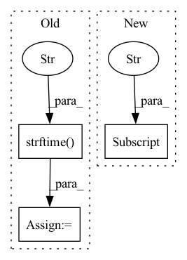

Pattern ID :23372
Before Change
// multiprocessing
now = datetime.datetime.now()
time = now.strftime("%Y-%m-%d" )
chunk_num = math.ceil(len(data_list) / chunk_size)
for i in range(chunk_num):
if i == chunk_num - 1:After Change
preprocess_type = "DIFF"
face_detect_algorithm = dataset["face_detect_algorithm"]
fixed_position = dataset["fixed_position"]
img_size = dataset["image_size"]
dataset_root_path = data_root_path + dataset_name
In pattern: SUPERPATTERN
Frequency: 3
Non-data size: 3
Instances Fragment ID: 73497473
Project Name: tvs-ai/pytorch_rppgs
Commit Name: d9e5f427ba4ef4e5bceddccc15ee6fa51cb5d5c6
Time: 2023-05-02
Author: spicyyeol@gmail.com
File Name: rppg/preprocessing/dataset_preprocess.py
M Class Name: AnonimousClass
N Class Name: AnonimousClass
M Method Name: preprocessing(3)
N Method Name: preprocessing(0)
M Parent Class:
N Parent Class:
M File Name: rppg/preprocessing/dataset_preprocess.py
N File Name: rppg/preprocessing/dataset_preprocess.py
M Start Line: 31
M End Line: 131
N Start Line: 20
N End Line: 128
Before Change
cv_result = CV_manager.cv_result()
end = time.time()
ty_res = time.gmtime(end - start)
res = time.strftime("%H hours, %M minutes, %S seconds" , ty_res)
k_fold_msg = msg_box(f"{k_fold}-fold cross validation ensembled result")
logger.info(f"{k_fold_msg}\n"
f"Total running time: {res}\n"
f"{cv_result}\n")After Change
if k_fold > 1:
log_mean = test_log["mean"]
idx = Cross_Valid.fold_idx
save_path = config.save_dir["metric"] / f"fold_{idx}.pkl"
log_mean.to_pickle(save_path)
Cross_Valid.next_fold()
Fragment ID: 73497469
Project Name: deeperlearner/pytorch-template
Commit Name: af0563f32ee3ddeb00df80685d1376454291eb66
Time: 2021-04-02
Author: b04202035@g.ntu.edu.tw
File Name: test.py
M Class Name: AnonimousClass
N Class Name: AnonimousClass
M Method Name: main(1)
N Method Name: main(1)
M Parent Class:
N Parent Class:
M File Name: test.py
N File Name: test.py
M Start Line: 33
M End Line: 140
N Start Line: 30
N End Line: 127
Before Change
def build_logger(cfg, default_args):
timestamp = time.strftime("%Y%m%d_%H%M%S" , time.localtime())
format_ = "%(asctime)s - %(levelname)s - %(message)s"
formatter = logging.Formatter(format_)
logger = logging.getLogger()After Change
if handler["type"] == "StreamHandler":
instance = logging.StreamHandler(sys.stdout)
elif handler["type"] == "FileHandler":
fp = os.path.join(default_args["workdir"], "%s.log" % default_args["timestamp"] )
instance = logging.FileHandler(fp, "w")
else:
instance = logging.StreamHandler(sys.stdout) Fragment ID: 73497471
Project Name: media-smart/vedacls
Commit Name: 940f6886fa10cb1df2fd71b2ffc6fc6bde0f5fb4
Time: 2020-06-03
Author: chenhao.wang@media-smart.cn
File Name: vedacls/logger/builder.py
M Class Name: AnonimousClass
N Class Name: AnonimousClass
M Method Name: build_logger(2)
N Method Name: build_logger(2)
M Parent Class:
N Parent Class:
M File Name: vedacls/logger/builder.py
N File Name: vedacls/logger/builder.py
M Start Line: 8
M End Line: 19
N Start Line: 17
N End Line: 17